Where to test for legacy arsenic from the 1907–1912 compulsory cattle-dipping program, given that most of the historically indicated ground was mass-graded between 1999 and 2007. Twenty-three modelled targets, re-examined against present-day land use, and converted into accessible sampling stations.
A Cal State Fullerton team, working with the resident group Ladera Health Watch, began collecting soil and water samples in Ladera Ranch on or about 13–14 September 2026, at three parks, analysing for heavy metals including arsenic and lead, and for pesticides. This report does three things: it audits that effort and what is known about it; it sets out the analytical questions that determine whether an arsenic result will mean anything; and it converts the project's 23 historically-derived targets into a concrete, accessible, defensible sampling plan that accounts for twenty years of grading.
Three findings drive everything below.
Offer the CSUF team the historical layer and ask for four things in return: that arsenic and lead be reported together on every sample; that at least three stations be placed on ungraded ground in the Arroyo Trabuco corridor rather than only on park turf; that any sample exceeding roughly 12 mg/kg arsenic be held for speciation and bioavailability; and that the sampling depths include a 15–30 cm horizon, not only the surface. Then supply target 6 and target 2 as named stations, and the concrete-base area as a fifth, with the caveat that its identification is unestablished.
| Item | What the public record shows | Grade |
|---|---|---|
| Organisation | Ladera Health Watch describes itself as "an independent, resident-led volunteer organization." Founded 2026 by Jackie French, a California attorney and former journalist, who serves as founder and director. Site: laderahealthwatch.org (also resolves from ochealthwatch.org). | A2 · own site |
| Scientific lead | Dr Jennifer Piazza, professor in the Public Health / Health Science department at CSU Fullerton, described as an NIH-funded researcher, serves as scientific advisor to the group and is named in press coverage as scientific lead. Prof. Daniel Curtis of CSUF is also named on the sampling team. | A2 · B2 press |
| Other advisors | Landscape architect Scott Neiman, engineer Brian Dazey, attorney Warren Martin. Several team members sit on LARMAC's Landscape Advisory Committee. | A2 · own site |
| Sampling | Soil and water samples collected on or about Sunday 13 September 2026 at three parks, by CSUF researchers and students. Analytes reported in coverage as heavy metals "such as arsenic and lead" plus pesticides. First results "as early as the end of the week"; fuller results "by the end of the year." | B2 · news |
| Their own status note | A post on the group's site states: "Research questions, sampling methodology, locations and necessary approvals are still being developed. Environmental sampling has not yet begun." That post predates the 13–14 September collection; the two together suggest sampling began quickly after the protocol was settled. | A2, timing inferred |
| State activity | CDPH confirms the California Cancer Registry is conducting a focused assessment of cancer incidence in the Ladera Ranch area, using data through 2023, with completion expected fall 2026. CDPH states no environmental cause of Ewing sarcoma or the reported cancers in Ladera Ranch has been established. | A2 · CDPH |
| HOA action | LARMAC extended a pause on the products Lifeline, Atrimmec and Specticle G through 14 November. | A2 |
Positive indicators. A named founder with a public professional identity; a named university scientist with an institutional affiliation that can be verified; named technical advisors; a stated collaboration with the HOA's landscape committee rather than a covert posture; sampling actually performed rather than announced; and on-record caution from the scientists themselves, including Prof. Curtis's "it's very difficult to prove causation, and we don't even know that this is environmental."
Open questions, not red flags. The group is new (2026), has no disclosed legal form or funding, and has not published a protocol. That is ordinary for a volunteer group moving fast, and it is also exactly the gap that turns good samples into unusable data later. The LARMAC advisory-committee overlap is a strength for access and a potential constraint on independence; it should be disclosed rather than assumed.
Inference, labelled. Nothing found suggests developer, HOA-management or law-firm sponsorship. Absence of evidence here is weak evidence: the group's funding is simply not disclosed.
"Heavy metals" almost certainly means a total-metals scan. That measures how much arsenic is present. It does not, on its own, say what kind, where it came from, or whether it is available to a human body. Four different measurements are in play, and they answer four different questions.
| Measurement | Typical method | What it answers | Relevance here |
|---|---|---|---|
| Total arsenic | Acid digestion (EPA 3050B or 3051A) then ICP-MS (EPA 6020B) or ICP-OES (EPA 6010D) | How many mg of arsenic per kg of soil. The headline number, and the one compared to screening levels. | Essential. Ask for ICP-MS (6020B), not ICP-OES: the lower reporting limit matters when background is 1–11 mg/kg. |
| Lead, on the same sample | Same digestion and run | The As:Pb ratio. Lead-arsenate orchard spraying leaves elevated arsenic and lead together, roughly 1:3 to 1:4 As:Pb. Arsenic trioxide dipping leaves arsenic with no accompanying lead. | The discriminator. High arsenic with flat lead points away from orchards and toward a dip-style source. Costs nothing extra on the same run. |
| Speciation | HPLC-ICP-MS; arsenite As(III), arsenate As(V), and organoarsenicals such as MMA and DMA | The chemical form. Inorganic As(III)/As(V) is the toxicologically important fraction; organic forms are far less so. | Order on exceedances only. Arsenic trioxide weathers to inorganic arsenate in soil; a strongly organic signature would argue for a different source such as MSMA herbicide. |
| Bioavailability | In-vitro bioaccessibility, EPA 1340 (gastric-phase extraction) | How much of the arsenic a child's gut would actually absorb, typically far below total. | Order on exceedances only. This is what converts a soil number into a meaningful exposure statement, and it is the honest answer to "is this dangerous?" |
Speciation and bioaccessibility cannot be run on a number; they must be run on retained sample material. If the CSUF samples are digested and discarded, a later decision to speciate means going back into the field. One sentence to the lab now, "hold the residual material pending possible speciation," preserves that option for a few dollars a sample.
| Benchmark | Value | What it is |
|---|---|---|
| California background, soil arsenic | 1–11 mg/kg | The commonly cited natural range for California soils; regional studies put typical values in the low single digits. Above ~11 the burden of explanation shifts. |
| DTSC screening, residential (CHHSL / HHRA note) | ≈0.07–0.11 mg/kg | The cancer-risk-based screening number is below natural background, which is why California practice compares to background first and screening levels second. Expect this confusion in any public discussion. |
| US EPA regional screening level, residential soil | 0.68 mg/kg | Same issue: below background. A screening level is a trigger for evaluation, not a cleanup standard. |
| Florida dip-vat program experience | 11 of 12 sites exceeded | When Florida tested vat sites, nearly all required remediation consideration; documented vat-site soils ran to hundreds of mg/kg. |
| This project's modelled vat-footprint estimate | 128–763 mg/kg | Model estimate only, for the vat, pens and drip-pen footprint, before any dilution by grading. Not a measurement. |
Practical reading. A park-turf result of 2–6 mg/kg is unremarkable background. A result of 15–40 mg/kg with flat lead in an ungraded corridor is a finding that justifies a step-out grid. A result in the hundreds anywhere is a stop-work-and-call-the-state number. Grading dilution means a genuine vat footprint could be spread to well under 50 mg/kg across a wide area, which is precisely why the ungraded stations matter more than the graded ones.
The 23 targets were derived from the 1968 USGS field survey of surface water, on the logic that cattle congregate daily at water, that congregation points are where a dipping station and its pens would be sited, and that a point on or near the drainage is simultaneously a congregation point and a sediment trap. That logic is sound for 1907. It is not a statement about 2026 ground.
Landsat analysis of the community footprint shows the disturbed fraction rising from 3.7 % (1997) to 11.8 % (1999), 33.8 % (2000), 40.0 % (2001) and a peak of 52.8 % in 2002, then declining through 2006. In a mass-graded master plan, that means: ridges cut, swales filled, the original A-horizon stripped and either buried, re-spread as landscape soil, or exported.
Do not sample the coordinate. Sample the three receptors around it. For each target: (1) the nearest retained ground within the same grading cell, meaning open space, slope face or trail margin that the plans left alone; (2) the nearest common-area landscape on the filled low ground, meaning park turf margins and parkway strips, which is where re-spread material ends up and where children actually contact soil; and (3) the nearest depositional trap downslope, meaning channel silt, basin bottom or outfall apron. If none of the three exists within about 200 m, the target is not worth sampling and should be recorded as such.
Every target was re-examined against the 1990 pre-grading aerial, the 2022 three-inch orthoimage, the OpenStreetMap road, trail, park and school network, the county assessor parcel layer, and the 2018 five-metre digital elevation model. Each was then assigned a tier reflecting how interpretable a soil result there would be.
Target 6 — ungraded oak and riparian corridor, on the drainage, immediately downslope of the concrete feature observed in August 2026, and the largest 1968 water body in the northern group at 9,111 m². Native grade. If legacy arsenic exists anywhere in this landscape at an interpretable concentration, this is the most likely place to measure it. Take three depths and a paired sediment grab.
Target 2 — creek-corridor bench, 15 m from the drainage, never graded, on the Arroyo Trabuco Trail. A second independent ungraded station in the same corridor; two agreeing results are worth far more than one.
Target 4 / 13 — the two large impoundments, 12,395 m² and 24,745 m², now under golf. Fine sediment in a former pond bed is the best natural archive available: it integrates a century of catchment runoff. Access requires the club's permission, which is worth asking for.
Sorted by tier. Coordinates in the last column are the computed accessible station: a vegetated, non-roadway point derived from the 2022 three-inch imagery, screened against the road network and the assessor parcel layer. They are a starting point for a field walk, not a survey control. Verify access and ownership before sampling, and obtain permission for anything that is not public open space.
| # | Tier | What is there now | Grading history | Metrics | Recommended action | Accessible station |
|---|---|---|---|---|---|---|
| 6 | A | Ungraded open space Oak/riparian corridor below the 2026 concrete find |
None. Ungraded corridor | 42 m 9,111 m² 291.1 ft |
Direct sample at the point, and this is the single highest-value station in the set: ungraded corridor, on the drainage, immediately downslope of the 2026 concrete find. Take 0-5, 15-30 and 45-60 cm plus one sediment grab in the creek. | 33.55848, -117.65272 13 m from centre · 335 m from road |
| 8 | A | Ungraded open space Arroyo Trabuco slope/corridor |
None | 46 m 4,661 m² 243.9 ft |
Direct sample at the point plus one sediment grab in the Arroyo Trabuco channel 60 m east. | 33.54804, -117.66009 20 m from centre · 192 m from road |
| 2 | A | Ungraded open space Arroyo Trabuco creek corridor, never graded |
None. Riparian corridor retained as open space | 15 m 1,307 m² 248.1 ft |
Direct sample at the point. Creek-corridor soil never graded. Take the 0-5 cm horizon and a 15-30 cm horizon at the same station; add one channel-sediment grab at the nearest slack-water bar. | 33.54765, -117.65933 4 m from centre · 262 m from road |
| 11 | A | Ungraded open space Slope above Arroyo Trabuco Trail |
None | 165 m 882 m² — ft |
Direct sample at the point. Trail-side, ungraded slope. | 33.55061, -117.66027 50 m from centre · 197 m from road |
| 10 | A | Golf margin / open space Golf margin + preserved brush at canyon confluence |
Partial; margins retained | 97 m 547 m² 254.2 ft |
Sample the preserved brush margin and the confluence silt bench. Access from the Arroyo Trabuco Trail. | 33.54586, -117.66021 8 m from centre · 214 m from road |
| 19 | A | Ungraded open space Ungraded canyon south of Ladera |
None | 681 m 418 m² 429.5 ft |
Direct sample at the point. Ungraded canyon, but 681 m from the mapped drainage: lower prior. | 33.53475, -117.65610 11 m from centre · 319 m from road |
| 12 | A | Ungraded open space Slope above Arroyo Trabuco Trail |
None | 167 m 373 m² — ft |
Direct sample at the point. Trail-side, ungraded slope, 5 m off the Arroyo Trabuco Trail. | 33.55159, -117.66048 18 m from centre · 140 m from road |
| 13 | B | Golf course Large 1990 impoundment now golf course + creek |
Fairway/pond shaping | 183 m 24,745 m² — ft |
Sample the pond margin and the creek silt bench. The largest 1990 impoundment in the set (24,745 m2). | 33.54392, -117.66130 3 m from centre · 215 m from road |
| 4 | B | Golf course Golf course fairway on the old canyon floor |
Fairway shaping over the impoundment; fill likely 1-3 m | 27 m 12,395 m² — ft |
Sample the fairway rough and the pond margin. This was a 12,395 m2 impoundment in 1990: the finest, most arsenic-retentive sediment in the whole set sits in its bed. | 33.54096, -117.66046 33 m from centre · 210 m from road |
| 3 | B | Under Ladera build-out Under Ladera housing at Sienna Pkwy; 1990 ranch drainage head |
Full mass grading 1999-2003; swale filled, pad cut | 18 m 734 m² 475.3 ft |
Do not sample the roadway. Sample the HOA landscape strip on the south side of Sienna Parkway and the turf margin at Founder's Park, both within 220 m. Rationale: the 1990 drainage head here was filled; fill material was won locally. | 33.55546, -117.63691 4 m from centre · 5 m from road |
| 1 | B | Golf course Arroyo Trabuco GC fairway/rough; 1990 open oak-grass with ranch road |
Golf-course grading (shallow shaping + irrigation); native grade largely intact under rough | 1 m 515 m² — ft |
Sample the rough and the unirrigated margin between the fairway and the creek, plus the first silt bench in the channel below. Golf shaping here was shallow; the 1990 ranch road is still visible in the 2022 image. | 33.53803, -117.66370 105 m from centre · 24 m from road |
| 7 | B | Under Ladera build-out Under Ladera housing; Frog Park 20 m |
Full mass grading; drainage head filled | 42 m 508 m² 508.8 ft |
Sample Frog Park turf margin and the adjacent common-area slope, 20 to 70 m from the point. The 1990 swale was filled to make the pad; the park occupies the low ground. | 33.55730, -117.63684 68 m from centre · 7 m from road |
| 16 | B | Under Ladera build-out Under Ladera housing, Bayley St roundabout; park 53 m |
Full mass grading | 526 m 495 m² 425.1 ft |
Sample the park 53 m away and the roundabout landscape island. Both are common area on filled ground. | 33.54808, -117.64405 90 m from centre · 6 m from road |
| 9 | B | Under Ladera build-out Under condos off Granville St; Chaparral Park 71 m |
Full mass grading; canyon head filled | 88 m 476 m² 570.6 ft |
Sample Chaparral Park and the common-area slope behind the condominiums, 70 to 110 m. Canyon head was filled here; the park is the accessible low point. | 33.56254, -117.63300 92 m from centre · 7 m from road |
| 17 | B | Under Ladera build-out Under Ladera housing, Creighton Pl |
Full mass grading; slope cut | 528 m 412 m² 441.2 ft |
Sample the Creighton Place parkway strip and the nearest manufactured slope face. | 33.55281, -117.64401 17 m from centre · 7 m from road |
| 14 | B | Under Ladera build-out Under Ladera housing, Davis Pl |
Full mass grading; ridge cut | 473 m 399 m² 357.9 ft |
Sample the common-area landscape strip on Davis Place and the nearest slope face. Ridge was cut here; cut material moved downhill to the east. | 33.54078, -117.64666 88 m from centre · 8 m from road |
| 15 | B | Under Ladera build-out Under Ladera housing, O'Neill Dr; park 77 m |
Full mass grading; swale filled | 509 m 367 m² 412.1 ft |
Sample the park 77 m away and the O'Neill Drive parkway strip. Swale filled during grading. | 33.54808, -117.64410 93 m from centre · 8 m from road |
| 21 | C | RMV new village Rancho Mission Viejo new-village edge; 1990 ranch pond + oaks |
Active grading 2015-2025 | 1094 m 1,687 m² 613.0 ft |
Sample only with RMV permission. Active new-village grading since 2015 makes provenance unclear. | 33.52818, -117.63542 81 m from centre · 7 m from road |
| 22 | C | Open rangeland (RMV) Open rangeland on RMV land, ungraded |
None | 1144 m 379 m² 421.8 ft |
Ranch-era reference point. Ungraded rangeland; useful for establishing a local background, not as an exposure point. | 33.54412, -117.62617 3 m from centre · 202 m from road |
| 20 | D | Pre-1990 edge Oak grove + pre-1990 houses |
Edge development | 688 m 3,721 m² — ft |
Deprioritise, or use as a ranch-era reference: the oak grove is undisturbed. | 33.52558, -117.66207 47 m from centre · 20 m from road |
| 23 | D | Developed before 1990 Developed before 1990; Granada Park 12 m |
Not Ladera build-out | 1714 m 534 m² — ft |
Deprioritise. Pre-1990 development; Granada Park adjacent if a background point is wanted. | 33.56871, -117.66935 52 m from centre · 25 m from road |
| 5 | D | Developed before 1990 Houses present in 1990 (Mission Viejo, Horno Creek Rd) |
Graded pre-1980s; not part of Ladera build-out | 27 m 405 m² — ft |
Deprioritise. Houses stood here in 1990; this is Mission Viejo, graded decades before the Ladera era, and an orchard sits 0.1 km away which confounds any arsenic result. | 33.52499, -117.64745 24 m from centre · 13 m from road |
| 18 | D | Developed before 1990 Developed before 1990 (Mission Viejo); Cordova Park 3 m |
Not Ladera build-out | 632 m 354 m² 464.0 ft |
Deprioritise. Pre-1990 development; Cordova Park adjacent if a background point is wanted. | 33.56806, -117.65560 16 m from centre · 14 m from road |
Metrics column: distance from the mapped 1968 drainage · area of the 1968 water body · ground elevation from the 2018 county DEM.
This section is written so it can be handed to a soils engineer, an environmental consultant or a university lab without further explanation.
| Element | Specification |
|---|---|
| Station type | Five-point composite over a 3 m radius (four points on the cardinal directions plus centre), homogenised in a stainless bowl, unless a discrete sample is needed for a specific feature such as a silt bench. |
| Depths | 0–5 cm (child contact and wind-erodible fraction), 15–30 cm (below turf amendment and rooting disturbance), and at tier-A stations 45–60 cm. On filled ground, a hand auger to 1.2 m with 30 cm interval logging is preferable if access allows, because the pre-grading horizon may be at depth. |
| Fraction | Sieve to <2 mm for the bulk analysis. Additionally request the <250 µm fraction on child-contact stations: that is the fraction that adheres to hands, and it typically carries higher metal concentrations than bulk soil. |
| Sediment stations | Grab from the top 5 cm of fine sediment at a slack-water bar, basin bottom or outfall apron. Note whether the deposit is active or relict. |
| Replicates | One field duplicate per ten samples, minimum one per day. One equipment rinsate blank per day if non-disposable tools are used. |
| Background stations | Minimum three, on ungraded ground, at least 300 m from any 1968 water point, any historic orchard footprint and any current or former agricultural area. Report the local background range rather than relying on the statewide 1–11 mg/kg figure. |
| Containers | Laboratory-supplied 8 oz glass jars with Teflon-lined lids for metals; no preservative required; cool to 4 °C; metals have a six-month holding time, which is generous but should still be documented. |
| Positional record | GNSS fix to <3 m with the accuracy value recorded, a photograph looking north from each station, and a note of slope position (ridge, mid-slope, toe, channel) and apparent fill versus native ground. |
| Chain of custody | Signed COC from field to lab, with the analyte list and any hold requests written on the form itself, not agreed verbally. |
| Analysis | Method | Notes |
|---|---|---|
| Arsenic, total | EPA 3050B/3051A digestion + EPA 6020B ICP-MS | Request a reporting limit of ≤0.5 mg/kg. ICP-OES (6010D) is acceptable but has a higher limit and less headroom against background. |
| Lead, total | Same digestion and run | Non-negotiable. The As:Pb ratio is the orchard discriminator. Adds essentially nothing to cost. |
| Full CAM 17 metals | Same run | Recommended. Chromium, copper, zinc and antimony help fingerprint fill material and other historical uses. |
| Arsenic speciation | HPLC-ICP-MS: As(III), As(V), MMA, DMA | Conditional. Trigger on any sample >12 mg/kg total arsenic. |
| Bioaccessible arsenic | EPA Method 1340 in-vitro gastric extraction | Conditional, same trigger. This is the number that supports or refutes an exposure statement, as opposed to a presence statement. |
| Soil characterisation | pH, organic matter, particle size | Inexpensive; arsenic partitioning is pH- and iron-oxide-dependent, and without these the geochemistry cannot be interpreted. |
| Organochlorine pesticides | EPA 8081B, if the pesticide question is in scope | Separate question from the dipping-era arsenic; keep the two lines of inquiry distinct in reporting. |
| Sample retention | Written hold instruction | "Retain residual sample material for a minimum of 90 days pending possible speciation and bioaccessibility." Put it on the COC. |
| Result on a station | Action |
|---|---|
| < 11 mg/kg As | Within the commonly cited California background range. Record and move on. Report it publicly with the same prominence as any other result. |
| 11–40 mg/kg As | Above background. Run speciation and bioaccessibility on the archived material. Step out with a four-point grid at 25 m to define extent. Check lead on the same sample. |
| > 40 mg/kg As, flat lead | Consistent with a non-orchard arsenic source. Notify the property owner and the county; recommend the State be brought in. Expand the grid and add depth profiling. |
| Elevated As and elevated Pb at roughly 1:3 | Consistent with lead-arsenate orchard use, a different and also documented history. Report it as such rather than forcing it into the dipping hypothesis. |
| Any result at a child-contact location above the bioaccessibility-adjusted screening threshold | Immediate notification to the landowner and the county, regardless of source attribution. Source attribution is a research question; child contact is a safety question and does not wait for it. |
"I have a sourced historical layer for Ladera Ranch that I don't think is in your dataset: the 1907–1912 state-mandated arsenic cattle-dipping program on the O'Neill Ranch, the federal formula and cadence, a 1968 USGS surface-water analysis that identifies where cattle would have congregated, twenty-three ranked targets reconciled against 1990 and 2022 imagery and the grading history, and a field observation from August 2026 of a concrete feature whose identification is not established. I'd like to give it to your team, and I'd like to ask for four things in the analytical protocol that cost almost nothing and preserve options later. I'm not asking anyone to endorse a hypothesis; I'm asking that the samples be capable of testing one."
If they can only take one addition, make it target 6.
Left frame: OC Survey 1990 countywide aerial, before the Ladera build-out. Right frame: OC Survey 2022 three-inch orthoimage. Red ring: the 1968 USGS water point that generated the target. Green ring: the computed accessible sampling station. Each frame is approximately 300 m across. No coordinates of the August 2026 field observation are shown anywhere in this document.
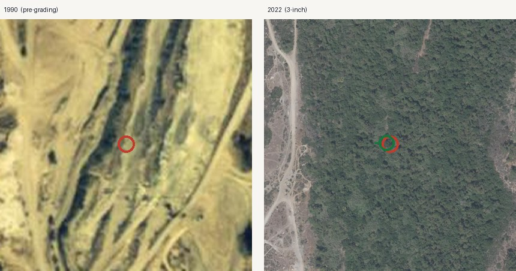
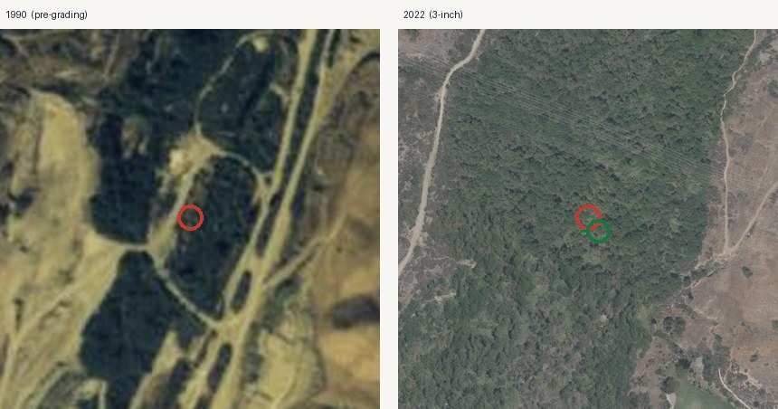
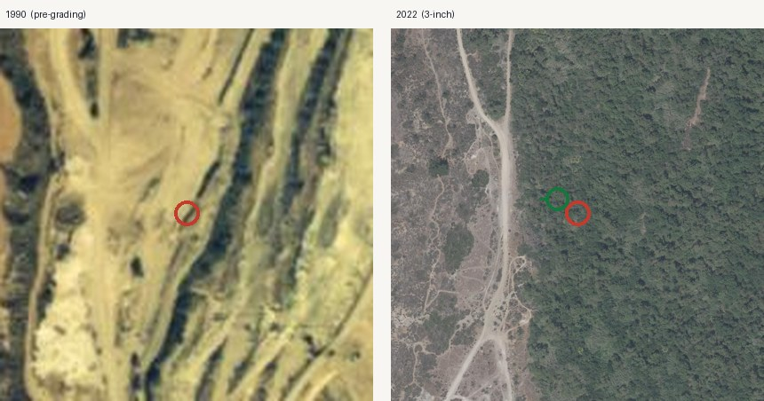
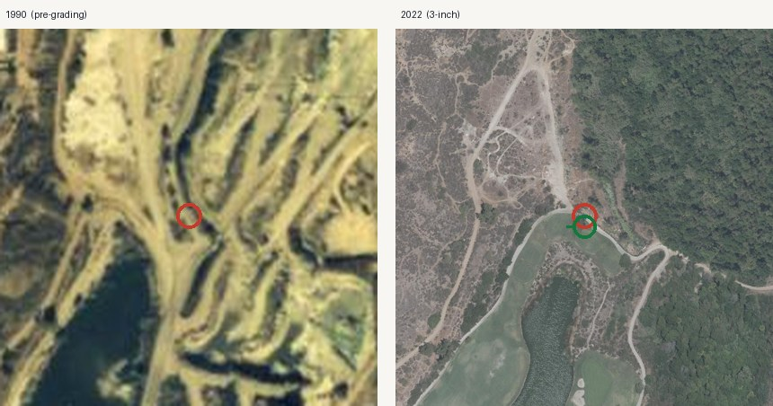
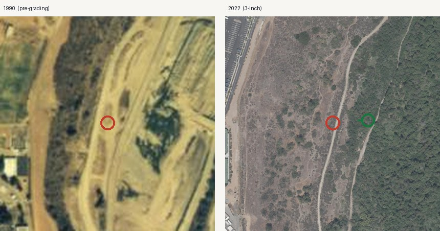
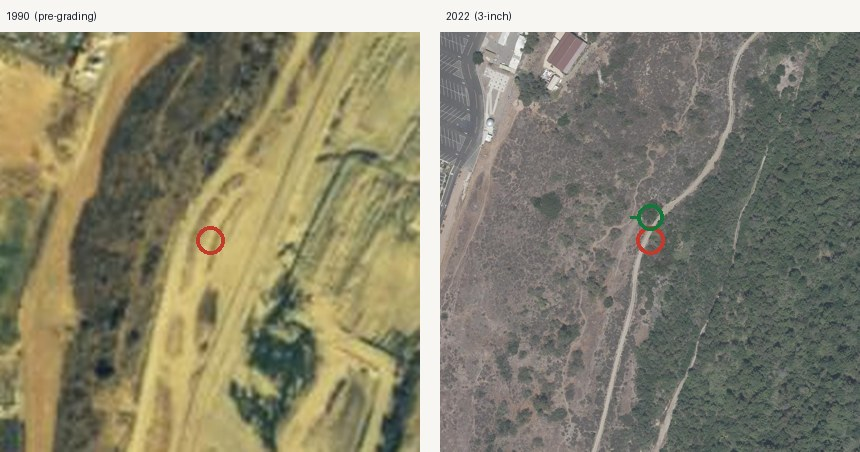
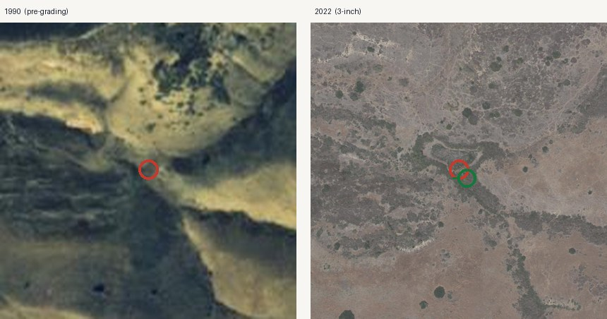
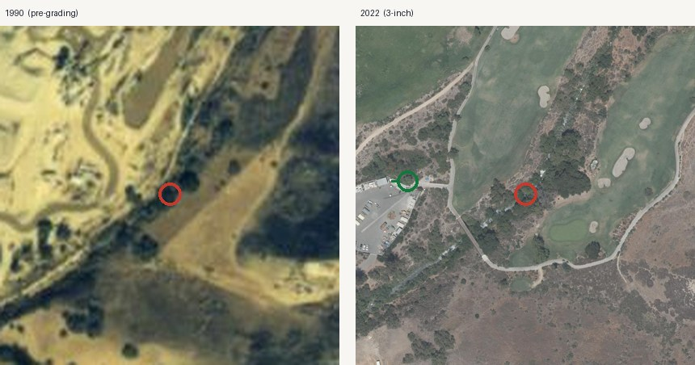
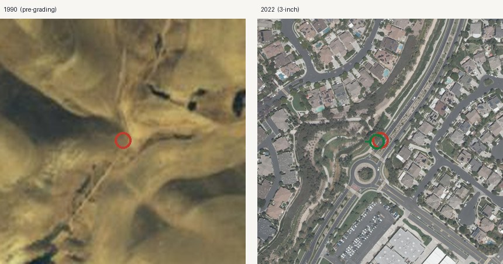
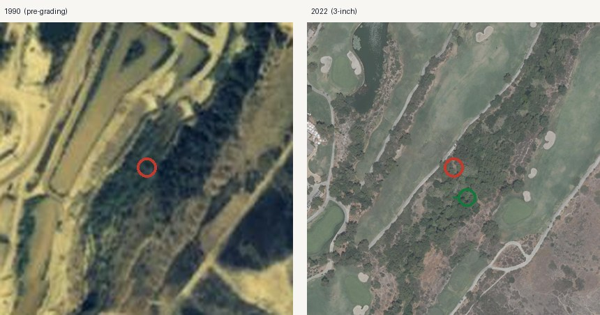
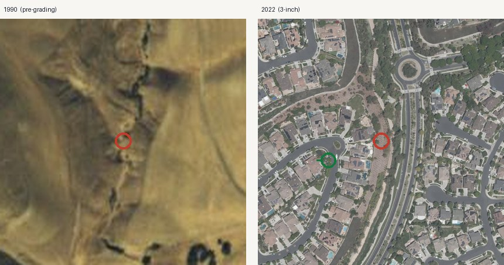
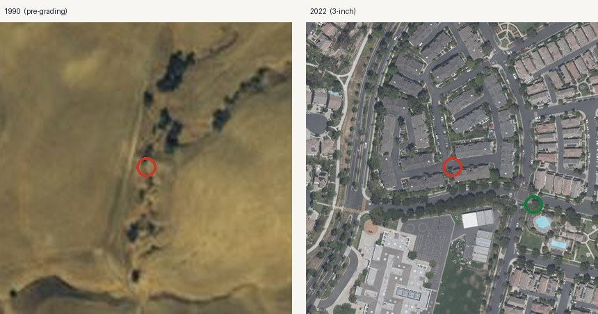
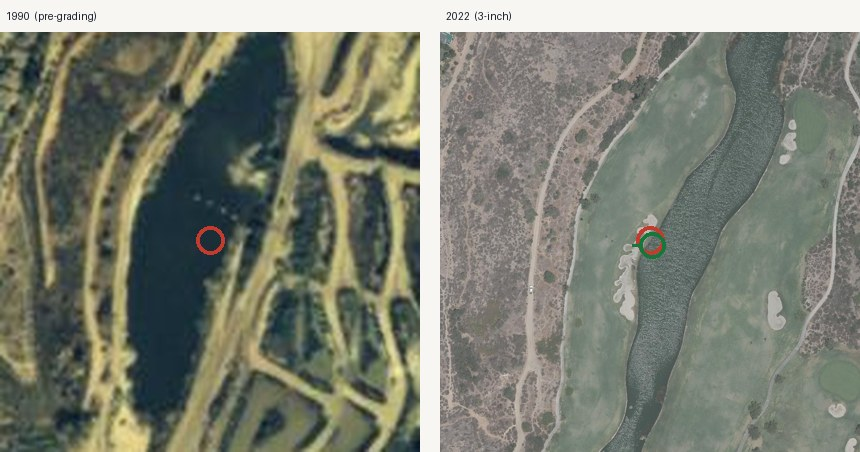
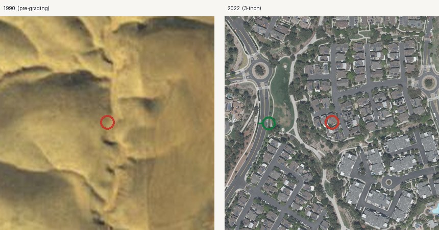
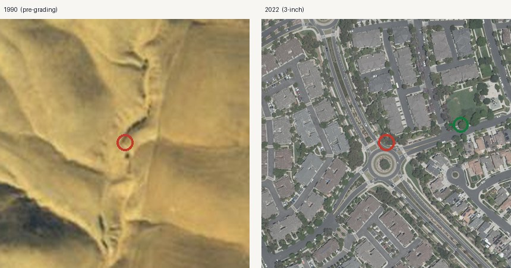
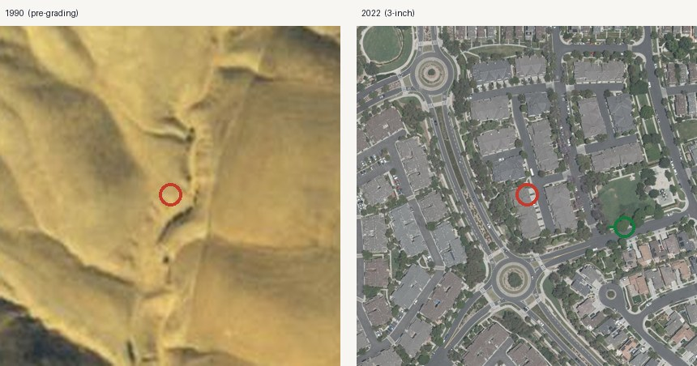
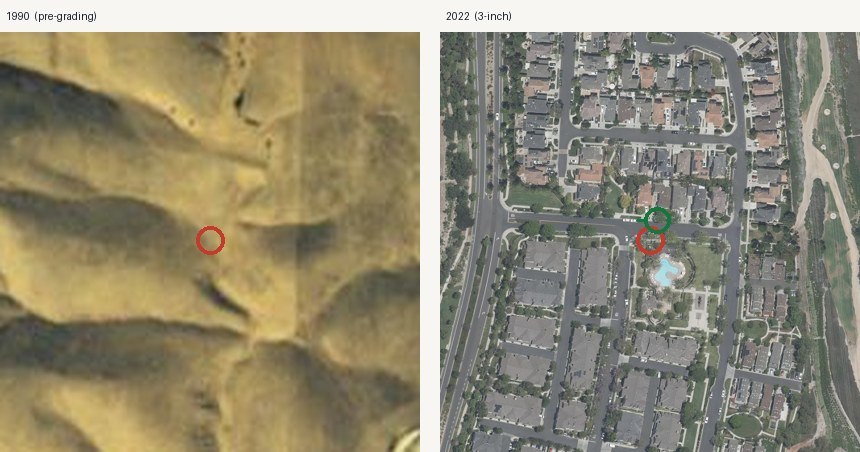
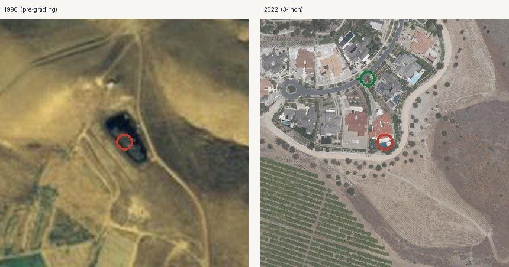
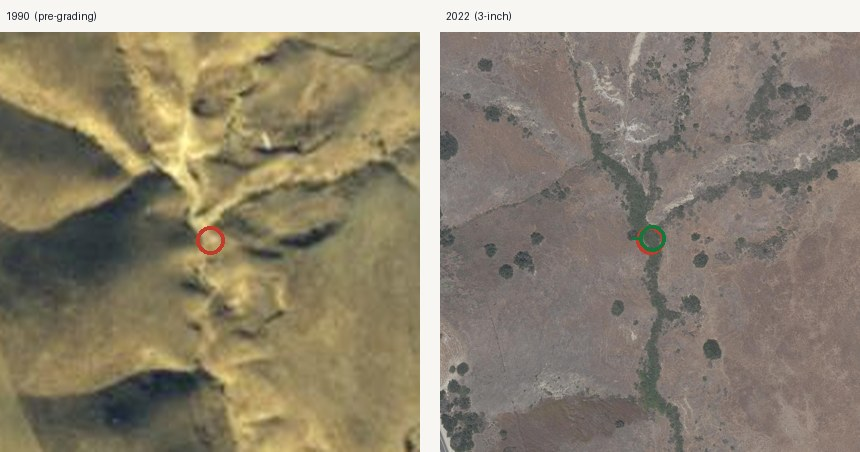
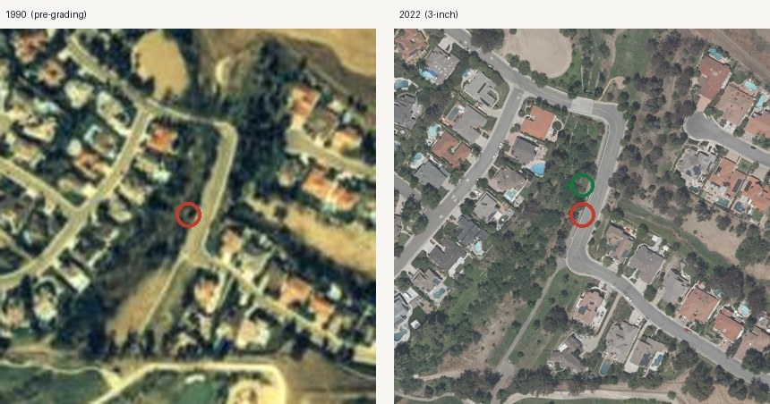
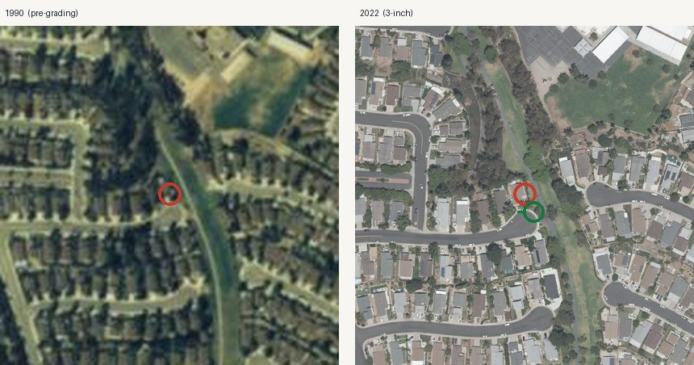
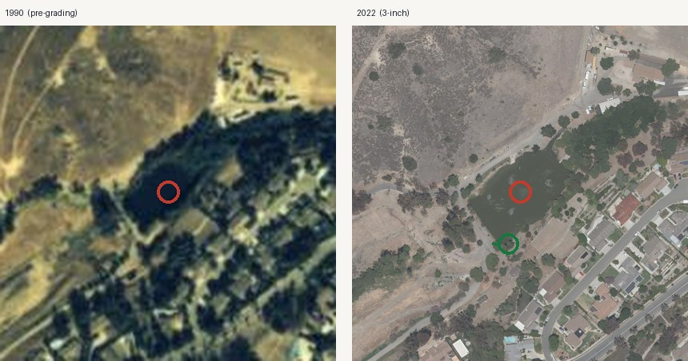
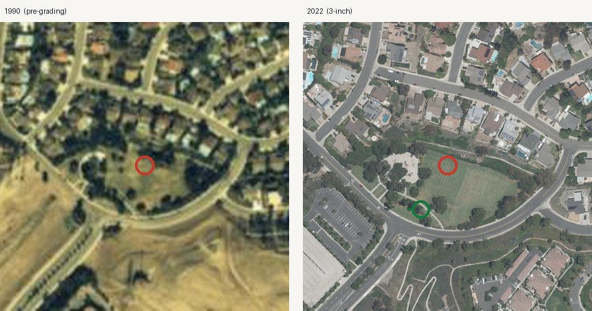
| Layer | Source | Grade |
|---|---|---|
| 1968 surface-water points, 23 targets | USGS 1:24,000 topographic field survey, digitised; project file topo1968_water.json and sampling_targets.json, generated 31 July 2026 | A1 |
| 1990 pre-grading aerial | OC Survey countywide imagery series | A+ |
| 2022 three-inch orthoimagery | OC Survey 22_OC_3IN_SP6 ImageServer | A+ |
| Grading progression 1997–2006 | Landsat 5/7 disturbed-fraction analysis; project file grading_maps_summary.json | Interpreted from A1 |
| Elevation, local relief | OC 2018 digital elevation model, 5 m, EPSG:26946, values in feet | A1 |
| Roads, trails, parks, schools | OpenStreetMap extract, retrieved 19 September 2026 | B1 |
| Parcels | OC Assessor parcel layer, retrieved 28 July 2026 | A2 |
| Mass-balance and concentration estimates | Project report ARSENIC_QUANTIFICATION_MASTER.md, from USDA BAI Circulars 174 and 183 (1911) | Model estimate on A1 inputs |
| Ladera Health Watch organisation and personnel | laderahealthwatch.org, retrieved 19 September 2026 | A2 |
| CSUF sampling, 13–14 September 2026 | NBC Los Angeles, "Soil and water tests underway in Ladera Ranch due to cancer concerns" | B2 |
| CDPH and California Cancer Registry status | CDPH statement as reported by Ladera Health Watch, retrieved 19 September 2026 | A2 as reported |
Disclaimer. This platform is an independent research and data-organization project. It does not provide medical advice and does not establish that any pesticide, property, organization, employer, school, water provider, government agency, or other party caused any illness. Publicly reported health events may not have been independently medically verified. Geographic and temporal overlap does not establish exposure or causation. Formal conclusions require authorized epidemiological analysis, verified medical information, exposure assessment, toxicological review, and independent scientific evaluation. Coordinates of the August 2026 field observation are withheld pending notification of the landowner and the State.